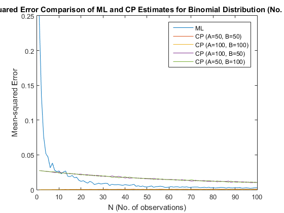
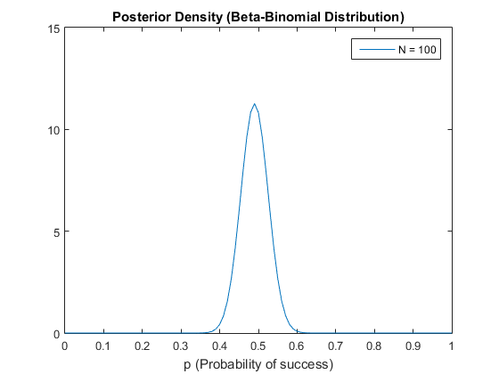
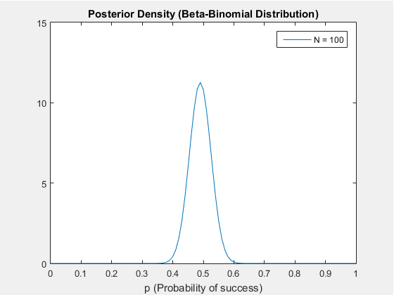

Contents
Binomial Distribution - ML and CP Estimates
clc; clear all; close all; % Binomial distribution parameters N = 1:1:100; % No. of observations p = 0.5; % Probability of success for one trial % - Also the mean for Bernoulli (individual trials) % - This is the true value of the parameter being compared with % the ML and CP estimates % Data generation % - Generate vector of 1's and 0's for EACH # of observations % MULTIPLE times % - Since these vectors are differently sized, I store them in a cell array % - The rows of the cell matrix represent each distinct N % - Each element of the cell matrix is a N-by-nTrials normal matrix % (for vectorization) % - So each COLUMN of the inner matrix represents a different trial of % N observations nTrials = 100; x = cell(size(N,2),1); for i = 1:size(N,2) % Temporary inner matrix x_i = []; % Fill the inner matrix with trials for j = 1:nTrials x_i = [x_i (rand(1,N(i)) <= p)']; end % Put the matrix in the cell array x{i,1} = x_i; % USE CURLY BRACES TO REPLACE DATA, % smooth brace indexing replaces cells end % Compute mean-squared error of ML estimate for each observation % - Will store it in a vector the same size as N % - We'll also store the counts of 1's and 0's because we'll need it later % for the conjugate prior (m and l) % - m and l are N-by-nTrials matrices like the inner matrices of x MSE_ML = []; m = []; l = []; for i = 1:size(N,2) % Sum matrix elements along columns (i.e. sum them for the same N) to % count # of 1's for each trial for a fixed N (m) % Subtract m from N to get l m_i = sum(x{i,1},1); % be careful when dealing with row/col vectors l_i = N(i)-m_i; % Find ML estimate by dividing m by # of observations mu_ML_i = m_i/N(i); % Find mean squared error by averaging squared error for each % ML measurement across all trials (along rows) MSE_ML_i = mean((mu_ML_i - p).^2, 2); % Store values into overall ML, m, and l vectors/matrices MSE_ML = [MSE_ML MSE_ML_i]; m = [m; m_i]; l = [l; l_i]; end % Compute mean-squared error of conjugate prior estimate % Beta distribution hyperparameters (4 sets) a = [50, 100, 100, 50]; b = [50, 100, 50, 100]; % Will store these conjugate prior estimates in a matrix % - Row - different # of observations, Col - hyperparameter sets MSE_CP = []; % Go through each set of hyperparameters for i = 1:size(a,2) % Calculate the conj. prior estimates (see P73) % Since we're using m and l, recall that the output is an N-by-nTrials % matrix mu_CP_i = (m+a(i))./(m+a(i)+l+b(i)); % Take difference from true value (p) and average across trials % (along rows) to get mean-squared error MSE_CP_i = mean((mu_CP_i - p).^2, 2); % Store in overall MSE_CP matrix MSE_CP = [MSE_CP MSE_CP_i]; end % Plots of estimates for each hyperparameter figure plot(N,MSE_ML) hold on for i = 1:size(a,2) plot(N,MSE_CP(:,i)) hold on end title(['Mean-Squared Error Comparison of ML and CP Estimates '... 'for Binomial Distribution ',sprintf('(No. Trials = %d)',nTrials)]) legend('ML',... sprintf('CP (A=%d, B=%d)',a(1),b(1)),... sprintf('CP (A=%d, B=%d)',a(2),b(2)),... sprintf('CP (A=%d, B=%d)',a(3),b(3)),... sprintf('CP (A=%d, B=%d)',a(4),b(4))) xlabel('N (No. of observations)') ylabel('Mean-squared Error') hold off
Binomial Distribution - Modeling Posterior VS. No. Observations
% Horizontal axis, represents probability of success mu = 0:0.01:1; % Capture pdf snapshots into frames for movie function for i = 1:size(N,2) % Update parameters A_post = m(i)+a(1); B_post = l(i)+b(1); % Updated distribution p_post = pdf('beta',mu,A_post,B_post); % "Plot" graph plot(mu,p_post) title(['Posterior Density (Beta-Binomial Distribution)']) xlabel('p (Probability of success)') axis([0 1 0 15]) legend(['N = ' num2str(N(i))]) drawnow % Capture plot frame M(i) = getframe(gcf); end % Play movie 1 times at 5 fps movie(figure,M,1,5) 